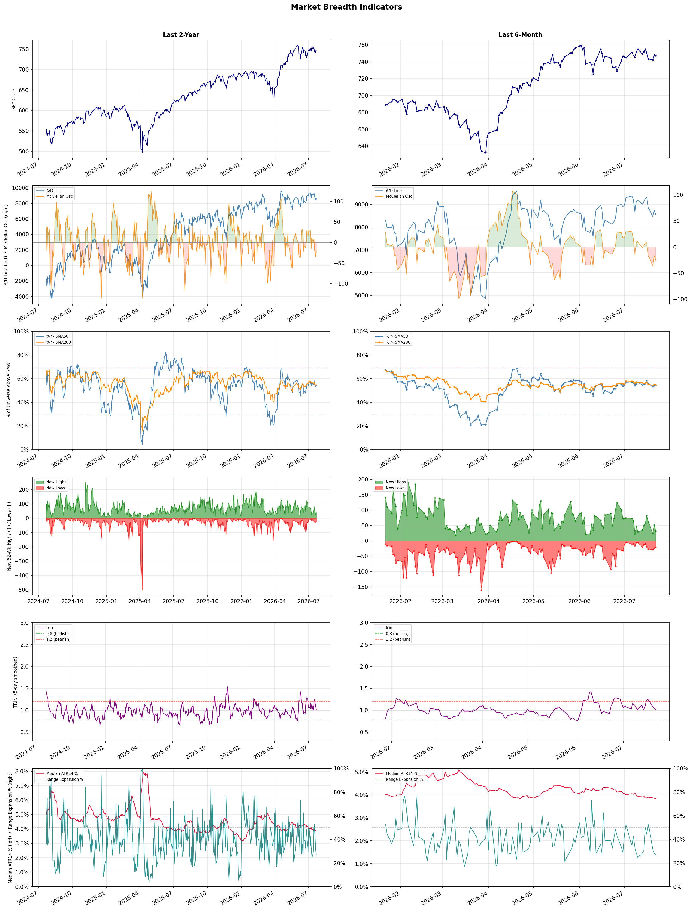

A daily market breadth and sector rotation report for active investors
| Item | Read |
|---|---|
| Regime | Selective Risk-On |
| Risk posture | Selective |
| Universe | 1,338 stocks tracked · 31 new 52-week highs · 30 active swing setups |
| Breadth | 54.2% of tracked stocks are above SMA50 — neutral range, new highs exceed new lows (31 vs 21), McClellan oscillator (breadth momentum) is negative at -25.3 |
| Leadership | Oil & Gas Refining & Marketing, Diagnostics & Research, and REIT - Healthcare Facilities |
| Weakest groups | Uranium, Other Industrial Metals & Mining, and Utilities - Renewable |
Use this report to prioritize research and chart review; validate entries, stops, liquidity, earnings, and risk before acting.
| Item | Read |
|---|---|
| Primary read | Selective Risk-On regime with Selective risk posture. |
| Research queue | PBF, DINO, MPC, VLO, UGP |
| Leadership focus | Oil & Gas Refining & Marketing, Diagnostics & Research, and REIT - Healthcare Facilities |
| Caution list | Uranium, Other Industrial Metals & Mining, and Utilities - Renewable |
| Review prompt | Check extension risk, chart location, fundamentals, valuation, and earnings before using any research row. |
| Item | Read |
|---|---|
| Primary read | 1 active risk warnings; use screen output as watchlist input only. |
| Bullish screens | OHI, BBVA, HSBC, ING, RLJ |
| Bearish screens | PRCT, BRSL, WYNN, PSEC, EVGO |
| Alerts / levels | Automated trigger, stop, ATR, liquidity, reward/risk, and event-risk levels are pending future enrichment. |
| Review prompt | Open the linked chart, define trigger and invalidation, then check liquidity and event risk independently. |
Risk Posture: Selective — screen backdrop supports selective research in leading industries
Metric context: McClellan below -50 = elevated selling pressure; below -100 = washout territory. Range Expansion = share of stocks with daily range above their 20-day average. Signal Density = share of tracked names appearing in signal screens.
| Breadth Date | % > SMA50 | % > SMA200 | New Highs | New Lows | McClellan | Median Range | Avg Range | Median ATR14 | Range Expansion | Signal Density |
|---|---|---|---|---|---|---|---|---|---|---|
| 2026-07-22 | 54.2% | 54.7% | 31 | 21 | -25.3 | 3.0% | 3.6% | 3.9% | 26.9% | 3.3% |

Prior comparison date: July 21, 2026
| Metric | Prior | Current | Change |
|---|---|---|---|
| Regime | Selective Risk-On | Selective Risk-On | unchanged |
| Risk Posture | Selective | Selective | unchanged |
| % > SMA50 | 54.1% | 54.2% | +0.1 pts |
| % > SMA200 | 55.1% | 54.7% | -0.3 pts |
| New Highs | 51 | 31 | -20 |
| New Lows | 24 | 21 | +3 |
Top-10 industries entering: Banks - Diversified and Oil & Gas Integrated. Top-10 industries leaving: Healthcare Plans and Insurance - Property & Casualty. New multi-signal long setups: APA, BBVA, CRSR, CTVA, EC, HPE, HSBC, ING, IVZ. New multi-signal short setups: BRSL.
| Status | Tickers | Read |
|---|---|---|
| Added | ABSI, ABVX, AKR, APA, BBVA, BRSL, CRSR, CTVA | New technical screen matches vs prior report. |
| Removed | BAK, BHC, CI, CNM, CPRT, DBRG, DINO, DRH | No longer present in today's technical screen matches. |
| Still Active | ALHC, EVGO, GH, MCD, PSEC, PSNL, RLJ, WYNN | Appeared in both current and prior reports. |
| Promoted | none | Model Screen Score improved by at least 15 points. |
| Downgraded | ALHC | Model Screen Score declined by at least 15 points. |
| Direction | Industry | ETF | Prior Rank | Current Rank | Days | Rank Change |
|---|---|---|---|---|---|---|
| Rose | Oil & Gas Refining & Marketing | CRAK | 83 | 1 | 35 | +82 |
| Rose | Oil & Gas Integrated | XLE | 81 | 10 | 28 | +71 |
| Rose | Insurance Brokers | N/A | 85 | 17 | 35 | +68 |
| Rose | Agricultural Inputs | N/A | 94 | 27 | 42 | +67 |
| Rose | REIT - Healthcare Facilities | XLRE | 64 | 3 | 35 | +61 |
Bull: The Oil & Gas Refining & Marketing sector is experiencing a bullish trend due to a combination of rising oil prices and increased demand for refined products, as indicated by the recent headlines highlighting the ETF CRAK reaching a new 52-week high and being recognized as a top-performing area. Additionally, the optimism surrounding potential de-escalation in the Middle East may stabilize supply concerns, further driving investor confidence in refiners like Marathon Petroleum, which has seen a significant rally of 52% in just six months. This favorable macro environment, coupled with strong performance metrics from leading companies, positions the sector for continued growth.
Bear: While the recent performance of the Oil & Gas Refining & Marketing sector, including the ETF CRAK hitting a new 52-week high, appears promising, it is essential to consider the cyclical nature of the industry and the potential for a downturn as global economic uncertainties persist. Additionally, the optimism surrounding de-escalation in the Middle East may be overly optimistic, as geopolitical tensions can quickly resurface, impacting oil supply and prices. Furthermore, increasing regulatory pressures and a global shift towards renewable energy sources could pose long-term challenges to the profitability of refiners, undermining the current bullish sentiment.
Verdict: The Oil & Gas Refining & Marketing sector is experiencing a bullish trend primarily due to rising oil prices and heightened demand for refined products, bolstered by investor optimism regarding potential stabilization in the Middle East. However, a key risk lies in the cyclical nature of the industry and the possibility of renewed geopolitical tensions, alongside increasing regulatory pressures and the global shift towards renewable energy, which could undermine long-term profitability. Investors should remain vigilant and consider these factors when making decisions in this sector.
Sources: Yahoo Finance, Google News
Bull: The Oil & Gas Integrated sector is experiencing rising relative strength primarily due to a positive shift in market sentiment driven by increasing oil prices, as indicated by headlines discussing the potential benefits for oil stocks from rising oil prices. Additionally, the consistent gains in energy stocks reported in multiple updates suggest a robust demand outlook and investor confidence in the sector's performance, further supported by articles highlighting the best oil stocks to invest in for the coming years. This combination of favorable price dynamics and bullish analyst recommendations positions the sector for continued strength.
Bear: While the recent rise in oil prices and positive market sentiment may suggest a robust outlook for the Oil & Gas Integrated sector, this bullish narrative overlooks significant headwinds, such as the ongoing transition to renewable energy sources and potential regulatory pressures aimed at reducing fossil fuel dependence. Additionally, the volatility inherent in oil prices, driven by geopolitical tensions and economic uncertainties, raises concerns about the sustainability of this upward trend, making the sector vulnerable to sharp corrections. Investors should remain cautious, as the current gains may not reflect long-term viability in a rapidly evolving energy landscape.
Verdict: The Oil & Gas Integrated sector's recent rise is fundamentally driven by increasing oil prices, bolstered by strong demand outlooks and positive market sentiment, which have attracted investor interest. However, key risks include the ongoing transition to renewable energy and potential regulatory pressures that could undermine the sector's long-term viability, suggesting investors should closely monitor geopolitical developments and shifts in energy policy.
Sources: Yahoo Finance, Google News
Bull: The relative strength of the Insurance Brokers industry is likely rising due to strong demand for insurance services and ongoing mergers and acquisitions (M&A), as highlighted in the Yahoo Finance article. Despite recent fears surrounding AI disruption, the solid earnings reported by companies like Ryan Specialty indicate robust operational performance, suggesting that established brokers are well-positioned to adapt and thrive in a changing landscape. This resilience in earnings and strategic consolidation efforts are key drivers supporting the industry's upward momentum.
Bear: While the bull thesis highlights strong demand and M&A activity, it underestimates the significant disruption potential posed by AI technologies, which could fundamentally alter the insurance brokerage landscape by automating processes and reducing the need for traditional brokers. Additionally, the recent decline in stock prices and compression of multiples suggest that the market is already pricing in these risks, indicating that the industry's relative strength may not be sustainable as investors reassess the long-term viability of established players in the face of technological advancements.
Verdict: The Insurance Brokers industry is experiencing upward momentum driven by strong demand for insurance services and strategic M&A activity, as evidenced by solid earnings from key players like Ryan Specialty. However, the significant risk of AI disruption looms, potentially automating traditional brokerage processes and altering the industry's landscape, which investors should closely monitor as it may impact long-term growth and valuations.
Sources: Google News
Bull: The Agricultural Inputs sector is likely experiencing rising relative strength due to favorable macroeconomic conditions and increasing demand for agricultural products, as highlighted by the positive outlook in articles like "Best Agriculture Stocks to Buy in 2026" from The Motley Fool. Additionally, the mention of significant opportunities in the US Basic Materials sector by Morningstar suggests that many companies within the agricultural inputs space are undervalued, which could attract investor interest and drive stock prices higher. This bullish sentiment is further reinforced by the sector's resilience amidst broader market fluctuations, as seen in the recent performance of CF Industries, which, despite a temporary drop, indicates a solid long-term growth potential in the agricultural inputs market.
Bear: While the bull analyst cites favorable macroeconomic conditions and increasing demand for agricultural products, it's important to consider the potential headwinds facing the Agricultural Inputs sector, such as rising input costs, supply chain disruptions, and regulatory pressures that could squeeze margins. Additionally, the recent drop in CF Industries' stock, amid sector-wide selling, suggests that investor sentiment may be more cautious than optimistic, indicating that the perceived undervaluation of agricultural stocks may not translate into immediate price appreciation as broader economic uncertainties loom.
Verdict: The Agricultural Inputs sector is likely experiencing rising relative strength due to increasing demand for agricultural products driven by favorable macroeconomic conditions, alongside potential undervaluation of key companies attracting investor interest. However, investors should remain cautious of key risks such as rising input costs, supply chain disruptions, and regulatory pressures that could impact profit margins and hinder immediate price appreciation. It may be prudent to monitor these factors closely while considering investments in this sector.
Sources: Google News
Bull: The rising relative strength of Healthcare REITs can be attributed to the increasing demand for healthcare facilities driven by an aging population and the ongoing emphasis on healthcare services, as highlighted by articles discussing the best healthcare REITs for long-term investment. Additionally, while financial stocks are experiencing volatility, the stability and defensive nature of healthcare investments make them more attractive to investors during uncertain market conditions, as suggested by the positive sentiment in the recent sector updates. This shift in investor focus towards resilient sectors like healthcare reinforces the bullish outlook for Healthcare REITs.
Bear: While the aging population and demand for healthcare services are valid points, the rising relative strength of Healthcare REITs may be misleading in the context of broader economic pressures. Increased interest rates and inflation could significantly impact the cost of capital and operational expenses for these REITs, potentially squeezing margins and leading to reduced profitability. Moreover, the volatility in financial stocks might indicate broader economic uncertainty, which could eventually spill over into the healthcare sector, undermining the perceived stability of Healthcare REITs.
Verdict: The rising strength of Healthcare REITs is fundamentally driven by the increasing demand for healthcare facilities due to an aging population and a heightened focus on healthcare services, making them attractive during market volatility. However, investors should remain cautious of the key risk posed by rising interest rates and inflation, which could adversely affect the cost of capital and operational expenses, potentially squeezing margins and impacting profitability.
Sources: Yahoo Finance, Google News
| Direction | Industry | ETF | Prior Rank | Current Rank | Days | Rank Change |
|---|---|---|---|---|---|---|
| Fell | Electrical Equipment & Parts | XLI | 8 | 82 | 35 | -74 |
| Fell | Other Industrial Metals & Mining | N/A | 24 | 87 | 35 | -63 |
| Fell | Semiconductor Equipment & Materials | SOXX | 3 | 64 | 35 | -61 |
| Fell | Electronic Components | XLK | 2 | 63 | 35 | -61 |
| Fell | Semiconductors | SOXX | 4 | 61 | 35 | -57 |
Bear: While the bull analyst highlights a shift towards technology and AI, this trend could be a significant headwind for the Electrical Equipment & Parts sector, which may struggle to compete for investor capital in an environment increasingly dominated by high-growth tech stocks. Additionally, the recent headlines indicate a volatile sentiment around semiconductor stocks, suggesting that the recovery may not be stable and could lead to further capital flight from traditional sectors like electrical equipment, which are already facing pressures from rising input costs and supply chain disruptions. This indicates that the relative strength decline may not just be a temporary shift but a longer-term trend as investors reassess their priorities in a rapidly evolving market landscape.
Bull: The Electrical Equipment & Parts sector is experiencing a decline in relative strength primarily due to the broader market's focus on the semiconductor industry and AI-driven investments, as indicated by the headlines highlighting the significant movements in equity futures and ETFs related to these sectors. Additionally, the recent fluctuations in investor sentiment, particularly the retreat from chipmaker stocks, suggest a shift in capital away from traditional electrical equipment towards high-growth areas like technology and AI, which are currently capturing more investor interest and funding.
Verdict: The Electrical Equipment & Parts sector is likely experiencing a decline in relative strength due to a significant capital shift towards high-growth areas like technology and AI, which are currently attracting more investor interest and funding. The key risk from the bear case is that this trend may not only persist but could intensify, as ongoing volatility in semiconductor stocks and rising input costs could further divert capital away from traditional sectors, indicating a potential long-term decline in the industry's attractiveness. Investors should closely monitor these dynamics and consider reallocating resources to sectors with stronger growth prospects.
Sources: Yahoo Finance, Google News
Bear: While the bull analyst attributes the sector's relative weakness to macroeconomic factors and competitive reallocations, it is crucial to consider the fundamental challenges facing the Other Industrial Metals & Mining sector itself. These include rising operational costs, regulatory pressures, and a lack of innovation compared to more agile segments within the broader metals industry, which could hinder long-term profitability and growth. Moreover, as the focus shifts towards sustainability and ESG considerations, companies in this sector may struggle to meet new standards, further dampening investor sentiment and capital inflows.
Bull: The relative weakness of the Other Industrial Metals & Mining sector can be attributed to a combination of macroeconomic factors and industry-specific challenges. Recent headlines highlight a growing focus on productivity and value creation, as noted by McKinsey & Company, indicating that companies in this sector may be struggling to adapt to evolving market demands and technological advancements, such as those driven by AI, as mentioned by the Boston Consulting Group. Additionally, the competitive landscape is intensifying, with analysts from BofA and The Motley Fool identifying top picks in a "red-hot" metals sector, suggesting that investors may be reallocating capital to more promising segments within the broader metals industry, thereby contributing to the relative decline of Other Industrial Metals & Mining.
Verdict: The Other Industrial Metals & Mining sector is experiencing a decline primarily due to rising operational costs and regulatory pressures, which are exacerbated by a lack of innovation compared to more agile segments within the broader metals industry. Additionally, the increasing emphasis on sustainability and ESG standards poses a significant risk, as companies may struggle to adapt, further dampening investor sentiment and capital inflows. Investors should closely monitor these fundamental challenges while considering potential reallocations to more promising segments in the metals industry.
Sources: Google News
Bear: While the bull analyst highlights positive developments in individual stocks like Intel and AMD, the broader trend in the Semiconductor Equipment & Materials sector indicates a fundamental weakness that cannot be overlooked. The relative strength decline suggests that investor confidence is waning, particularly as the market shifts towards value stocks amid uncertainty surrounding major tech earnings. Additionally, the recent pullback in the AI sector raises concerns about the sustainability of demand for semiconductor equipment, as it may signal a broader slowdown in tech investment that could negatively impact the entire sector's growth trajectory.
Bull: The Semiconductor Equipment & Materials sector is experiencing a relative strength decline primarily due to broader market volatility and a shift in investor focus towards value stocks ahead of major tech earnings, as indicated by the headlines. While there are positive developments like Intel and AMD's stock rallies and a sector-wide recovery, the overall sentiment is tempered by uncertainty surrounding upcoming earnings reports, leading to cautious trading in semiconductor ETFs. Additionally, the recent pullback in the AI sector has prompted investors to seek new certainties, potentially diverting attention away from semiconductor stocks despite their underlying growth potential.
Verdict: The Semiconductor Equipment & Materials sector is experiencing a decline due to a combination of broader market volatility and a shift in investor sentiment towards value stocks, particularly ahead of major tech earnings. The key risk highlighted by the bear case is the potential for a sustained slowdown in tech investment, exacerbated by the recent pullback in the AI sector, which could undermine demand for semiconductor equipment and hinder growth prospects. Investors should remain cautious and closely monitor upcoming earnings reports for signals of sector health.
Sources: Yahoo Finance, Google News
Bear: While the bull analyst points to potential growth in the electronic components sector, the mixed performance of tech stocks and the decline in relative strength trend suggest a broader market vulnerability that could undermine any isolated growth. Additionally, the anticipation of major tech earnings often leads to heightened volatility and investor caution, which may further depress sentiment and demand for electronic components. This environment raises concerns about the sustainability of any perceived growth, especially if macroeconomic factors or supply chain issues continue to weigh on the sector.
Bull: The Electronic Components sector is experiencing a relative strength decline primarily due to mixed performance in the broader tech market, as indicated by headlines like "Tech Stocks Mixed Late Afternoon" and "Exchange-Traded Funds, US Equities Mixed After Midday." Additionally, the anticipation of major tech earnings, as highlighted in "Exchange-Traded Funds, Equity Futures Lower Pre-Bell Wednesday Ahead of Major Tech Earnings," suggests investor caution, which may be impacting sentiment towards electronic components stocks. However, the mention of a prospering electronics components industry in "3 Stocks to Buy From a Prospering Electronics Components Industry" indicates underlying growth potential that could lead to a rebound.
Verdict: The electronic components industry is experiencing a decline primarily due to mixed performance in the broader tech market and investor caution ahead of major tech earnings, which has created a volatile environment that dampens sentiment. Key risks include the potential for macroeconomic factors and ongoing supply chain issues to undermine any growth, making it crucial for investors to closely monitor these developments and reassess their positions in light of market volatility.
Sources: Yahoo Finance, Google News
Bear: While the bull analyst attributes the semiconductor sector's relative strength decline to broader market volatility and a shift towards value stocks, the reality is that the semiconductor industry is facing fundamental challenges such as oversupply, pricing pressures, and cyclical downturns that are not merely a reflection of market sentiment. Additionally, the growing interest in AI-adjacent sectors indicates a potential long-term shift in investment focus away from traditional semiconductor stocks, suggesting that the recent rally in select names may be short-lived and not indicative of a sustainable recovery for the sector as a whole.
Bull: The semiconductor sector is experiencing a relative strength decline primarily due to broader market volatility and investor sentiment shifting towards value stocks ahead of major tech earnings, as indicated by headlines like "Wall Street Turns to Value Ahead of Alphabet Earnings." Additionally, the recent mixed performance of ETFs and equity futures, coupled with the focus on AI-adjacent sectors, suggests that while there is a rally in certain semiconductor stocks like Intel and AMD, overall market uncertainty is leading to a cautious approach among investors, impacting the sector's relative strength.
Verdict: The semiconductor industry's recent decline is primarily driven by fundamental challenges such as oversupply and pricing pressures, compounded by cyclical downturns that are not solely influenced by market sentiment. While the rally in select stocks like Intel and AMD may offer short-term opportunities, investors should remain cautious of the bear case's key risk: a sustained shift in focus towards AI-adjacent sectors, which could further diminish the long-term growth prospects for traditional semiconductor companies. Therefore, a selective investment approach that prioritizes companies with strong fundamentals and adaptability to market trends is advisable.
Sources: Yahoo Finance, Google News
| Industry | Rank | ETF | 7d | 14d | 28d | 42d | Chg 42d | Size | 20D | 60D | Composite | Active Setups |
|---|---|---|---|---|---|---|---|---|---|---|---|---|
| Oil & Gas Refining & Marketing | 1 | CRAK | 1 | 11 | 72 | 53 | +52 | 7 | 30.5% | 28.7% | 0.971 | 0 |
| Diagnostics & Research | 2 | N/A | 2 | 7 | 3 | 9 | +7 | 16 | 11.2% | 32.1% | 0.918 | 1 |
| REIT - Healthcare Facilities | 3 | XLRE | 17 | 16 | 44 | 56 | +53 | 10 | 10.1% | 14.4% | 0.879 | 0 |
| Banks - Diversified | 4 | N/A | 5 | 10 | 8 | 15 | +11 | 16 | 4.4% | 18.3% | 0.852 | 0 |
| REIT - Hotel & Motel | 5 | XLRE | 10 | 2 | 4 | 2 | -3 | 9 | 3.4% | 31.3% | 0.847 | 0 |
| Health Information Services | 6 | N/A | 3 | 8 | 12 | 16 | +10 | 12 | 9.4% | 25.5% | 0.844 | 1 |
| Insurance - Life | 7 | N/A | 12 | 18 | 37 | 31 | +24 | 7 | 7.9% | 12.4% | 0.842 | 0 |
| Medical Care Facilities | 8 | IHF | 7 | 6 | 11 | 34 | +26 | 9 | 8.7% | 14.6% | 0.841 | 0 |
| REIT - Office | 9 | XLRE | 9 | 17 | 6 | 4 | -5 | 8 | 3.6% | 27.3% | 0.828 | 0 |
| Oil & Gas Integrated | 10 | XLE | 37 | 73 | 81 | 40 | +30 | 10 | 11.8% | 5.1% | 0.817 | 0 |
Rank columns (7d–42d) show the industry's rank that many trading days ago — lower is stronger. Chg 42d = rank change vs 42 trading days ago — positive means the industry moved up. 20D and 60D are the mean stock return within the industry over that period. Active Setups: count of today's swing-trade candidates from this industry appearing across all signal screens.
| Industry | Rank | ETF | 7d | 14d | 28d | 42d | Chg 42d | Size | 20D | 60D | Composite | Active Setups |
|---|---|---|---|---|---|---|---|---|---|---|---|---|
| Uranium | 88 | URA | 87 | 88 | 84 | 95 | +7 | 6 | -12.5% | -27.2% | 0.057 | 0 |
| Other Industrial Metals & Mining | 87 | N/A | 88 | 85 | 75 | 84 | -3 | 21 | -17.1% | -23.0% | 0.073 | 0 |
| Utilities - Renewable | 86 | N/A | 82 | 81 | 68 | N/A | N/A | 7 | -13.4% | -12.0% | 0.124 | 0 |
| Aerospace & Defense | 85 | ITA | 85 | 83 | 80 | 68 | -17 | 26 | -12.8% | -16.8% | 0.130 | 0 |
| Gold | 84 | GDX | 86 | 86 | 88 | 96 | +12 | 27 | -2.6% | -20.6% | 0.154 | 0 |
| Specialty Industrial Machinery | 83 | N/A | 81 | 80 | 71 | 87 | +4 | 21 | -9.2% | -16.5% | 0.177 | 1 |
| Electrical Equipment & Parts | 82 | XLI | 69 | 49 | 32 | 36 | -46 | 12 | -20.8% | -3.8% | 0.205 | 1 |
| Solar | 81 | TAN | 57 | 71 | 58 | 25 | -56 | 8 | -11.1% | 1.0% | 0.252 | 1 |
| REIT - Mortgage | 80 | N/A | 56 | 69 | 65 | 89 | +9 | 12 | -1.2% | -8.4% | 0.255 | 0 |
| Information Technology Services | 79 | XLK | 77 | 65 | 69 | 91 | +12 | 32 | -2.5% | -6.3% | 0.259 | 0 |
Rank columns (7d–42d) show the industry's rank that many trading days ago — lower is stronger. Chg 42d = rank change vs 42 trading days ago — positive means the industry moved up. 20D and 60D are the mean stock return within the industry over that period. Active Setups: count of today's swing-trade candidates from this industry appearing across all signal screens.
These are research candidates from top-ranked stocks, capped at five names per industry to avoid over-concentration. Returns shown (60D, 120D, 250D) are historical — they reflect where prices have already moved, not forward expectations. Extension Risk flags names that may require extra patience or a better entry point. They are not buy signals.
Chart: TV = TradingView chart (opens in browser); PDF = local chart file (if downloaded).
| Ticker | Name | Industry | Industry Rank | Market Cap | 60D Hist | 120D Hist | 250D Hist | Extension Risk | Research Reason | Chart |
|---|---|---|---|---|---|---|---|---|---|---|
| PBF | PBF Energy | Oil & Gas Refining & Marketing | 1 | N/A | 57.9% | 95.5% | 164.5% | Extended | Top-ranked in industry; extended | TV |
| DINO | HF Sinclair | Oil & Gas Refining & Marketing | 1 | N/A | 50.8% | 79.0% | 98.6% | Extended | Top-ranked in industry; extended | TV |
| MPC | Marathon Petroleum | Oil & Gas Refining & Marketing | 1 | N/A | 40.9% | 83.6% | 77.9% | Constructive | Top-ranked in industry | TV |
| VLO | Valero Energy | Oil & Gas Refining & Marketing | 1 | N/A | 31.8% | 69.0% | 110.7% | Constructive | Top-ranked in industry | TV |
| UGP | Ultrapar Participacoes | Oil & Gas Refining & Marketing | 1 | N/A | 13.0% | 34.6% | 118.9% | Constructive | Top-ranked in industry | TV |
| PSNL | Personalis | Diagnostics & Research | 2 | N/A | 104.4% | 24.8% | 84.5% | Very extended | Top-ranked in industry; very extended | TV |
| NEO | NeoGenomics | Diagnostics & Research | 2 | N/A | 69.0% | 13.2% | 112.0% | Extended | Top-ranked in industry; extended | TV |
| ADPT | Adaptive Biotechnologies | Diagnostics & Research | 2 | N/A | 55.2% | 18.6% | 101.9% | Extended | Top-ranked in industry; extended | TV |
| ILMN | Illumina | Diagnostics & Research | 2 | N/A | 49.3% | 27.4% | 82.5% | Constructive | Top-ranked in industry | TV |
| IQV | IQVIA Holdings | Diagnostics & Research | 2 | N/A | 22.3% | -17.2% | 2.2% | Constructive | Top-ranked in industry | TV |
| WELL | Welltower | REIT - Healthcare Facilities | 3 | N/A | 17.4% | 33.2% | 51.6% | Constructive | Top-ranked in industry | TV |
| VTR | Ventas Inc | REIT - Healthcare Facilities | 3 | N/A | 16.2% | 28.0% | 44.1% | Constructive | Top-ranked in industry | TV |
| AHR | American Healthcare REIT | REIT - Healthcare Facilities | 3 | N/A | 13.9% | 23.2% | 49.8% | Constructive | Top-ranked in industry | TV |
| CTRE | CareTrust REIT Inc | REIT - Healthcare Facilities | 3 | N/A | 11.6% | 16.0% | 35.5% | Constructive | Top-ranked in industry | TV |
| SBRA | Sabra Health Care REIT Inc | REIT - Healthcare Facilities | 3 | N/A | 9.4% | 19.1% | 19.3% | Constructive | Top-ranked in industry | TV |
| MUFG | Mitsubishi UFJ Financial Group | Banks - Diversified | 4 | N/A | 29.6% | 24.8% | 54.0% | Constructive | Top-ranked in industry | TV |
| SMFG | Sumitomo Mitsui Financial | Banks - Diversified | 4 | N/A | 29.1% | 24.5% | 63.3% | Constructive | Top-ranked in industry | TV |
| BBVA | Banco Bilbao Vizcaya Argentaria | Banks - Diversified | 4 | N/A | 19.9% | 4.3% | 70.3% | Constructive | Top-ranked in industry | TV |
| BNY | Bank of New York Mellon | Banks - Diversified | 4 | N/A | 19.6% | 34.9% | 61.0% | Constructive | Top-ranked in industry | TV |
| HSBC | HSBC Holdings | Banks - Diversified | 4 | N/A | 15.0% | 18.5% | 58.3% | Constructive | Top-ranked in industry | TV |
These are technical screen matches from existing signal files. They are not trade recommendations. Trigger, stop, ATR, liquidity, reward/risk, and event risk still require separate validation until those inputs are available.
Model Screen Score is weighted by signal count, industry rank, freshness, and setup type. It is not a probability of profit, expected return, or suitability rating. Industry cap: max 3 candidates per industry.
Signal glossary: Momentum Pullback = stock in an uptrend that has pulled back 10–30% and shows re-entry conditions. MA Compression = short- and long-term moving averages converging, often preceding a directional move. Three-Day Up/Down = three consecutive closes in the same direction. New 52Wk High/Low = price reached a new annual extreme.
Chart: TV = TradingView chart (opens in browser); PDF = local chart file (if downloaded).
| Ticker | Industry | Setups | Close | Industry Rank | Signal Count | Model Screen Score | Reason | Chart |
|---|---|---|---|---|---|---|---|---|
| OHI | REIT - Healthcare Facilities | New 52Wk High; Three-Day Up | 50.61 | 3 | 2 | 100 | Multi-signal; top industry breakout | TV |
| BBVA | Banks - Diversified | New 52Wk High; Three-Day Up | 26.23 | 4 | 2 | 93 | Multi-signal; top industry breakout | TV |
| HSBC | Banks - Diversified | New 52Wk High; Three-Day Up | 103.11 | 4 | 2 | 93 | Multi-signal; top industry breakout | TV |
| ING | Banks - Diversified | New 52Wk High; Three-Day Up | 33.33 | 4 | 2 | 93 | Multi-signal; top industry breakout | TV |
| RLJ | REIT - Hotel & Motel | New 52Wk High; Three-Day Up | 12.33 | 5 | 2 | 93 | Multi-signal; top industry breakout | TV |
| EC | Oil & Gas Integrated | New 52Wk High; Three-Day Up | 16.69 | 10 | 2 | 85 | Multi-signal; top industry breakout | TV |
| PAGP | Oil & Gas Midstream | New 52Wk High; Three-Day Up | 26.21 | 24 | 2 | 77 | Multi-signal; new-high strength | TV |
| CTVA | Agricultural Inputs | New 52Wk High; Three-Day Up | 88.53 | 27 | 2 | 70 | Multi-signal; new-high strength | TV |
| APA | Oil & Gas E&P | Momentum Pullback; Three-Day Up | 36.18 | 31 | 2 | 70 | Multi-signal; pullback setup | TV |
| KOS | Oil & Gas E&P | Momentum Pullback; Three-Day Up | 2.65 | 31 | 2 | 70 | Multi-signal; pullback setup | TV |
| MTDR | Oil & Gas E&P | Momentum Pullback; Three-Day Up | 54.99 | 31 | 2 | 70 | Multi-signal; pullback setup | TV |
| CRSR | Computer Hardware | Momentum Pullback; Three-Day Up | 10.60 | 52 | 2 | 65 | Multi-signal; pullback setup | TV |
| IVZ | Asset Management | New 52Wk High; Three-Day Up | 30.50 | 53 | 2 | 65 | Multi-signal; new-high strength | TV |
| TXNM | Utilities - Regulated Electric | MA Compression; Three-Day Up | 58.30 | 45 | 2 | 60 | Multi-signal; compression setup | TV |
| HPE | Communication Equipment | Momentum Pullback; Three-Day Up | 48.13 | 75 | 2 | 55 | Multi-signal; pullback setup | TV |
| GH | Diagnostics & Research | Momentum Pullback | 150.75 | 2 | 1 | 65 | Single-signal; top industry pullback | TV |
| PSNL | Diagnostics & Research | Momentum Pullback | 12.47 | 2 | 1 | 65 | Single-signal; top industry pullback | TV |
| HNGE | Health Information Services | Momentum Pullback | 79.08 | 6 | 1 | 58 | Single-signal; top industry pullback | TV |
| ALHC | Healthcare Plans | Momentum Pullback | 20.77 | 12 | 1 | 50 | Single-signal; pullback setup | TV |
| PUK | Insurance - Life | Three-Day Up | 29.48 | 7 | 1 | 48 | Single-signal; top industry setup | TV |
| AKR | REIT - Retail | MA Compression | 22.31 | 11 | 1 | 45 | Single-signal; compression setup | TV |
| O | REIT - Retail | MA Compression | 65.03 | 11 | 1 | 45 | Single-signal; compression setup | TV |
| ABSI | Biotechnology | Momentum Pullback | 8.24 | 18 | 1 | 42 | Single-signal; pullback setup | TV |
| ABVX | Biotechnology | Momentum Pullback | 129.73 | 18 | 1 | 42 | Single-signal; pullback setup | TV |
Bearish setups — stocks making new lows or showing persistent downside patterns. Validate carefully before acting.
| Ticker | Industry | Setups | Close | Industry Rank | Signal Count | Model Screen Score | Reason | Chart |
|---|---|---|---|---|---|---|---|---|
| PRCT | Medical Devices | New 52Wk Low; Three-Day Down | 17.70 | 41 | 2 | 35 | Multi-signal; new-low weakness | TV |
| BRSL | Gambling | New 52Wk Low; Three-Day Down | 10.44 | 47 | 2 | 35 | Multi-signal; new-low weakness | TV |
| WYNN | Resorts & Casinos | New 52Wk Low; Three-Day Down | 94.37 | 48 | 2 | 35 | Multi-signal; new-low weakness | TV |
| PSEC | Asset Management | New 52Wk Low; Three-Day Down | 2.13 | 53 | 2 | 35 | Multi-signal; new-low weakness | TV |
| EVGO | Specialty Retail | New 52Wk Low; Three-Day Down | 1.58 | 54 | 2 | 35 | Multi-signal; new-low weakness | TV |
| MCD | Restaurants | New 52Wk Low; Three-Day Down | 263.57 | 58 | 2 | 35 | Multi-signal; new-low weakness | TV |
How To Use This Report
| Use | Purpose |
|---|---|
| Market map | Start with breadth, regime, risk warnings, and what changed since the prior report. |
| Industry scan | Use leading, deteriorating, rising, and declining industries to focus research. |
| Research queue | Treat long-term candidates as names for deeper fundamental, valuation, and chart review. |
| Technical review | Treat bullish and bearish screen matches as watchlist inputs that require independent trigger, stop, liquidity, and event-risk checks. |
| Source follow-up | Use chart links and source files to verify raw inputs before relying on any row. |
What This Report Is Not
| Not | Meaning |
|---|---|
| Investment advice | The report does not evaluate personal objectives, risk tolerance, tax situation, account type, or suitability. |
| Buy/sell recommendation | Named tickers are research candidates or screen matches, not recommendations to transact. |
| Price target | The report does not provide fair value estimates, targets, or expected returns. |
| Trade plan | Trigger, stop, sizing, reward/risk, liquidity, and event-risk review remain separate user work. |
| Performance claim | Model Screen Score is not validated historical performance or a forecast of future results. |
| Item | Note |
|---|---|
| Version | Daily Report Methodology v1 |
| Model Screen Score | Screen-fit rank based on signal count, industry rank, freshness, and setup type. |
| Not predictive proof | The score is not expected return, probability of profit, historical validation, or suitability analysis. |
| Industry ranks | Composite industry ranks use existing daily ranking outputs and historical rank columns when available. |
| Research candidates | Long-term rows are research candidates from ranked stocks and leading industries, with historical returns labeled as historical only. |
| Technical matches | Bullish and bearish rows are screen matches requiring independent chart, trigger, stop, liquidity, and event-risk review. |
| Source | Status | Rows | Path |
|---|---|---|---|
| Market breadth | present | 1253 | breadth_20260722.csv |
| Industry composite rankings | present | 88 | all_industry_composite_20260722.csv |
| Top ranked stocks | present | 104 | top_ranked_composite_20260722.csv |
| All ranked stocks | present | 1338 | all_stocks_composite_sorted_20260722.csv |
| Top momentum pullbacks | present | 1488 | top_momentum_pullbacks_20260722.csv |
| MA compression | present | 1488 | ma_compression_stocks_20260722.csv |
| Three-day up/down | present | 121 | three_day_up_down_stocks_20260722.csv |
| New 52-week members | present | 52 | breadth_new_52wk_members_20260722.csv |
This report is generated from automated technical screens and is for informational and research purposes only. It is not investment advice, a solicitation, or a recommendation to buy or sell any security. Past performance is not indicative of future results. You are solely responsible for your own investment decisions. Consult a licensed financial advisor before acting on any information herein.